Proposal 1
Overlaps provisional reference 4a-log (IoU 0.835); does not guarantee a complete crop.
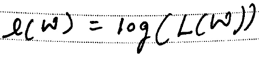
Draft reference: \(\ell(w)=\log(L(w))\)
\[ e(w)=\log(L(w)) \]
MiniCPM SDK uses PP-DocLayoutV3 torch on CPU with orientation correction disabled and MiniCPM OCR through a local server. GLM reads each full page directly. Qwen proposals are formula-only, not a complete page pipeline. The eleven standalone-formula references are provisional and inline notation is not exhaustively labeled. All output is uncorrected.
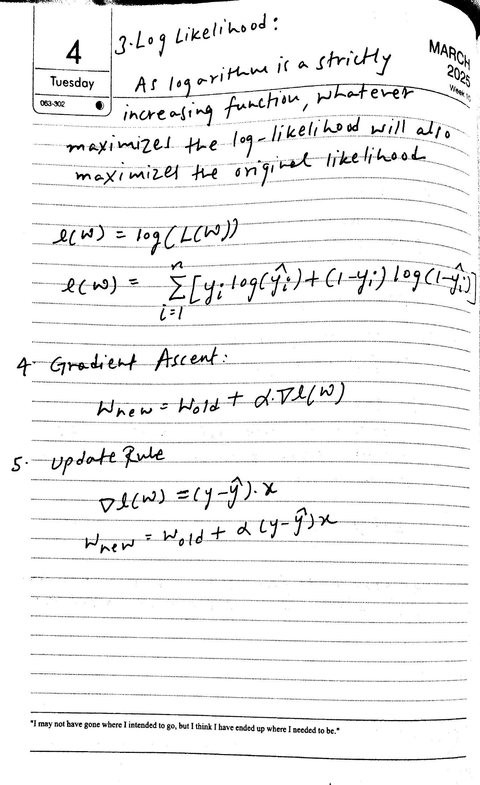
Tuesday
3. Log Likelihood:
As logarithm is a strictly
increasing function, whatever
maximizes the log-likelihood will also
maximize the original likelihood
\[
\begin{array}{l} l (w) = \log (L (w)) \\ l (w) = \sum_{i = 1}^{n} [ y_{i} \log (\hat{y}_{i}) + (1 - y_{i}) \log (1 - \hat{y}_{i}) ] \\ \end{array}
\]
Gradient Ascent:
\[w_{new} = w_{old} + \alpha \nabla l(w)\]
5. Update Rule
\[
\begin{array}{l} \Delta l (w) = (y - \hat{y}) \cdot x \\ w_{new} = w_{old} + \alpha (y - \hat{y}) x \end{array}
\]3. Log Likelihood:
As logarithm is a strictly increasing function, whatever maximizes the log-likelihood will also maximize the original likelihood
$$e(W) = \log(L(W))$$
$$e(W) = \sum_{i=1}^{n} [y_i \log(\hat{y}_i) + (1-y_i) \log(1-\hat{y}_i)]$$
4. Gradient Ascent:
$$W_{\text{new}} = W_{\text{old}} + \alpha \nabla e(W)$$
5. Update Rule
$$\nabla e(W) = (y - \hat{y}) \cdot x$$
$$W_{\text{new}} = W_{\text{old}} + \alpha (y - \hat{y}) x$$
"I may not have gone where I intended to go, but I think I have ended up where I needed to be."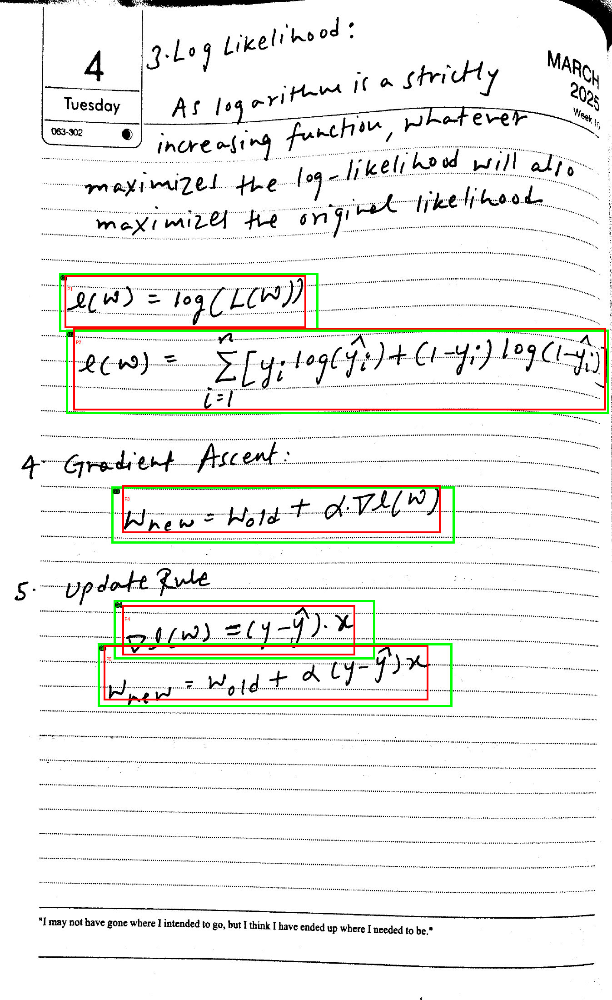
Overlaps provisional reference 4a-log (IoU 0.835); does not guarantee a complete crop.

\[ e(w)=\log(L(w)) \]
Overlaps provisional reference 4a-sum (IoU 0.922); does not guarantee a complete crop.
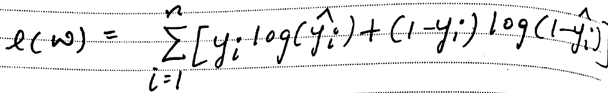
\[
l (w) = \sum_{i = 1}^{n} [ y_{i} \log (\hat{y}_{i}) + (1 - y_{i}) \log (1 - \hat{y}_{i}) ]
\]Overlaps provisional reference 4a-ascent (IoU 0.745); does not guarantee a complete crop.
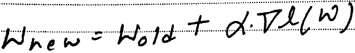
\[
W_{new}=W_{old}+\alpha.\nabla l(W)
\]Overlaps provisional reference 4a-gradient (IoU 0.753); does not guarantee a complete crop.
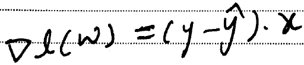
\[
\Delta l ( \omega ) = ( y - \hat{y} ) \cdot x
\]Overlaps provisional reference 4a-update (IoU 0.791); does not guarantee a complete crop.
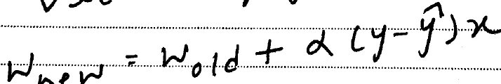
\[
w_{new}=w_{old}+\alpha(y-\hat{y})x
\]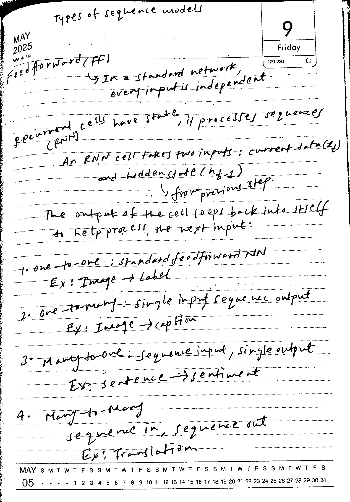
Feed forward (FF) In a standard network, every input is independent.
Recurrent cells have state, if processes sequences (PNN)
cells take two inputs: current data(
An RNN cell takes two inputs: current data ($x_t$) and hidden state ($h_{t-1}$) from previous step.
The output of the cell loops back into itself to help process the next input.
1. one-to-one : standard feedforward NN
Ex: Image → Label
2. one-to-many : single input sequence output
Ex: Image → caption
3. Many-to-one: sequence input, single output
Ex: sentence → sentiment
4. Many to Many
sequence in, sequence out
Ex: Translation.
MAYTypes of sequence models
May 2025
Week 19
Feedforward (FF)
In a standard network, every input is independent.
Recurrent cells have state, it processes sequences (RNN)
An RNN cell takes two inputs: current data ($k$) and hidden state ($h_{f-1}$)
from previous step.
The output of the cell loops back into itself to help process the next input.
1. One-to-one; standard feedforward NN
Ex: Image → Label
2. One-to-many: single input sequence output
Ex: Image → caption
3. Many-to-one: sequence input, single output
Ex: sentence → sentiment
4. Many-to-Many
sequence in, sequence out
Ex: Translation.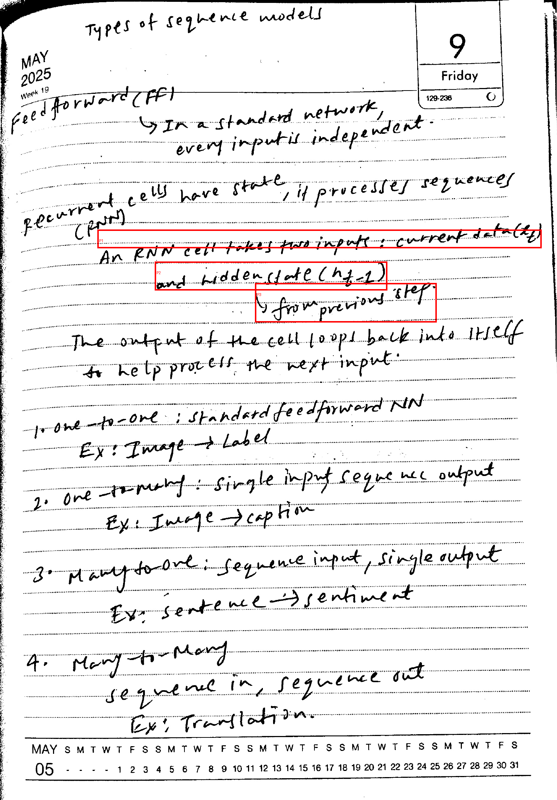
No match in the standalone-only reference set; this may contain other notation or text.
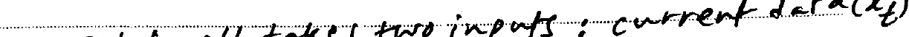
\[
\text{two inputs: current data}(x_t)
\]No match in the standalone-only reference set; this may contain other notation or text.
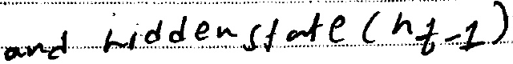
\[
\text{andhiddenstate}(n_{t}-1)
\]No match in the standalone-only reference set; this may contain other notation or text.
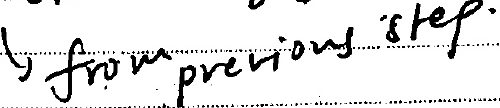
\[
\text{from previous step.}
\]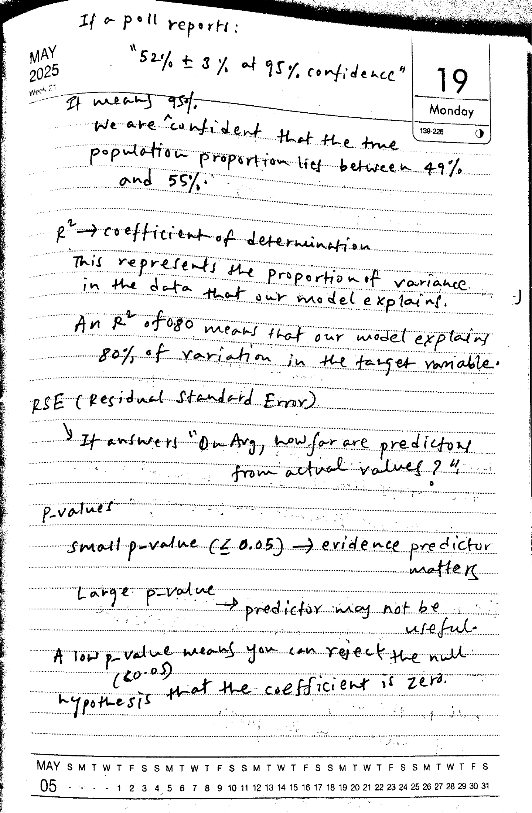
If a poll reports:
"52% ± 3% at 95% confidence"
It means 95%.
We are confident that the true population proportion lies between 49% and 55%.
Monday
139-226
$r^{2}$ → coefficient of determination
This represents the proportion of variance in the data that our model explains.
An $R^{2}$ of 0.80 means that our model explains 80% of variation in the target variable.
RSE (Residual Standard Error)
If answers "On Avg, how far are predictor/
from actual values?"
p-values
small p-value ( $\leq 0.05$ ) $\rightarrow$ evidence predictor matters
Large p-value $\rightarrow$ predictor may not be useful.
A low p-value means you can reject the null (60.05) hypothesis that the coefficient is zero.If a poll reports: "52% ± 3% at 95% confidence" It means 95%. We are confident that the true population proportion lies between 49% and 55%. $R^2 \rightarrow$ coefficient of determination. This represents the proportion of variance in the data that our model explains. An $R^2$ of 0.80 means that our model explains 80% of variation in the target variable. RSE (Residual Standard Error) It answers "On Arg, how far are predictors from actual values?" P-values Small $p$-value ($\leq 0.05$) $\rightarrow$ evidence predictor matters Large $p$-value $\rightarrow$ predictor may not be useful. A low $p$-value means you can reject the null hypothesis that the coefficient is zero.
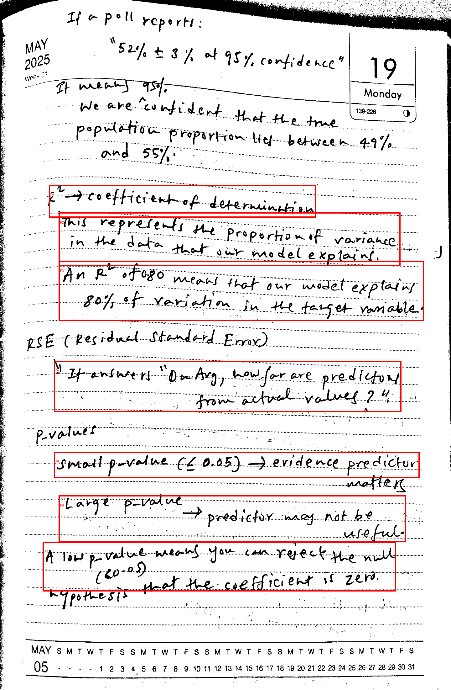
No match in the standalone-only reference set; this may contain other notation or text.
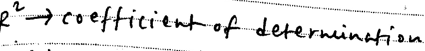
\[
r^{2}\rightarrow\text{coefficientofdetermination}
\]No match in the standalone-only reference set; this may contain other notation or text.
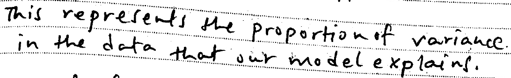
\[
\begin{array}{l} \text{This represents the proportion of variance.} \\ \text{in the data that our model explains.} \end{array}
\]No match in the standalone-only reference set; this may contain other notation or text.
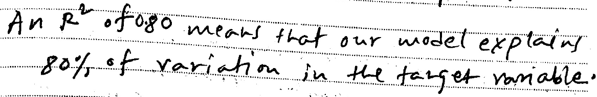
\[
\begin{array}{l} \text{An } R^2 \text{ of 0.80 means that our model explains} \\ \text{80\% of variation in the target variable.} \end{array}
\]No match in the standalone-only reference set; this may contain other notation or text.
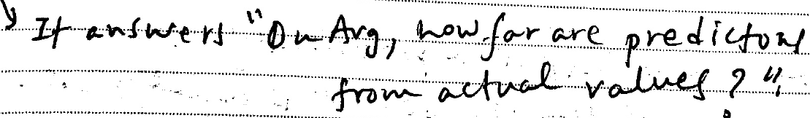
\[
\begin{array}{l} \text{It answers "On Avg, how far are prediction}\\ \text{from actual values?"} \end{array}
\]No match in the standalone-only reference set; this may contain other notation or text.
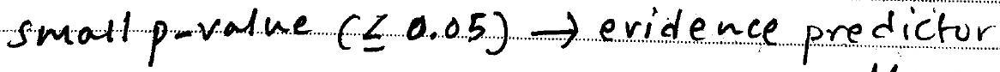
\[
\text{small } p \text{-value} (\leq 0.05) \to \text{evidence predictor}
\]No match in the standalone-only reference set; this may contain other notation or text.
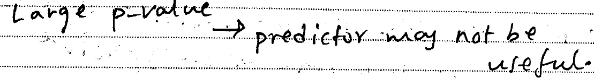
\[
\text{Largep-value}\rightarrow\text{predictormaynotbeuseful.}
\]No match in the standalone-only reference set; this may contain other notation or text.
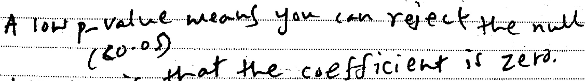
\[
\begin{array}{l} \text{A low p-value means you can reject the null} \\ (80.05) \\ \text{that the coefficient is zero.} \end{array}
\]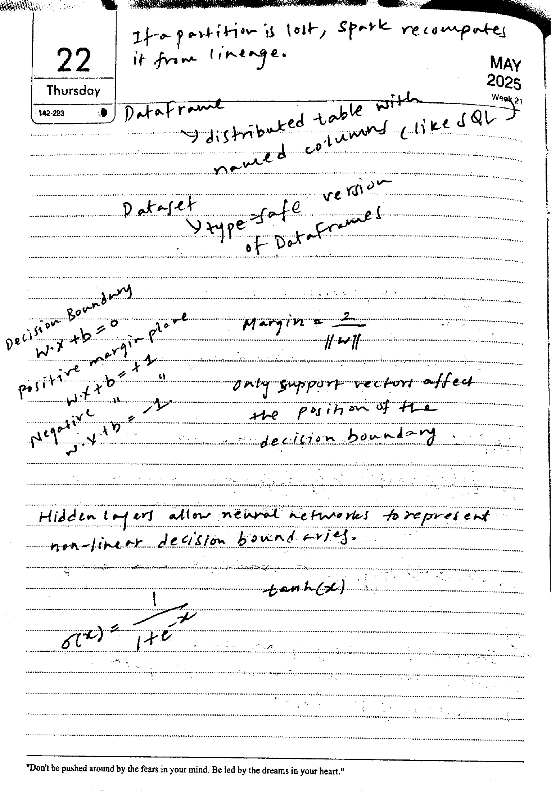
22
Thursday
If a partition is lost, spark recomputes
it from lineage.
Dataframe
→ distributed table with
named columns (like SQL)
Dataset
Ytype=safe version
of Dataframes
Decision Boundary
$w \cdot x + b = 0$
Positive margin plane
$w \cdot x + b = +1$
“
Negative
$w \cdot x + b = -1$.
only support vectors affect
the position of the
decision boundary.
Hidden layers allow neural networks to represent non-linear decision bound aries.
tanh(x)
\[
\sigma (x) = \frac{1}{1 + e^{- x}}
\]If a partition is lost, spark recomputes it from lineage.
DataFrame
distributed table with named columns like SQL
Dataset
type-safe version of DataFrames
Decision Boundary
$w \cdot x + b = 0$
positive margin plane
$w \cdot x + b = +1$
negative
$w \cdot x + b = -1$
Margin = $\frac{2}{||w||}$
only support vectors affect the position of the decision boundary.
Hidden layers allow neural networks to represent non-linear decision boundaries.
$\sigma(x) = \frac{1}{1 + e^{-x}}$
"Don't be pushed around by the fears in your mind. Be led by the dreams in your heart."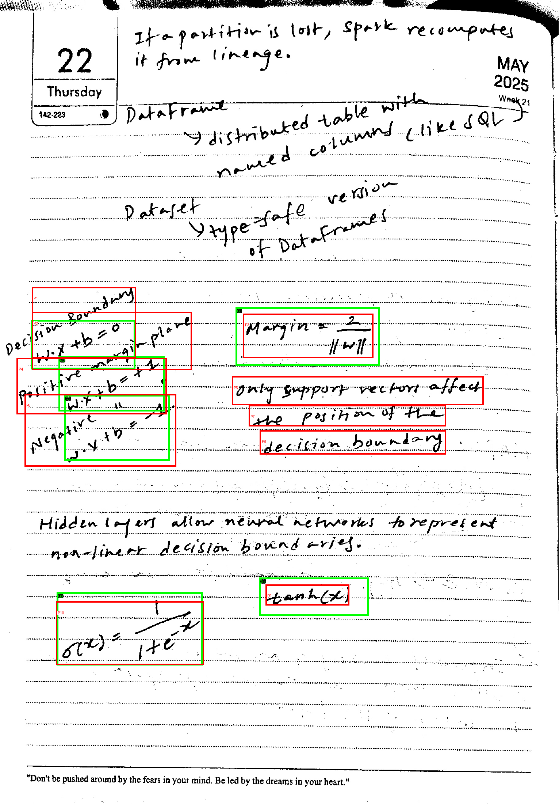
No match in the standalone-only reference set; this may contain other notation or text.
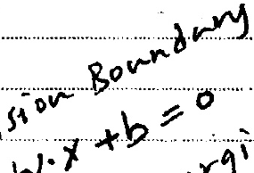
\[ x + b = 0 \]
Overlaps provisional reference 5b-boundary (IoU 0.548); does not guarantee a complete crop.
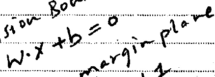
\[ w \cdot x + b = 0 \]
Overlaps provisional reference 5b-margin (IoU 0.683); does not guarantee a complete crop.
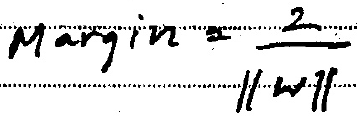
\[
\text{Margin}=\frac{2}{||w||}
\]Overlaps provisional reference 5b-positive (IoU 0.658); does not guarantee a complete crop.
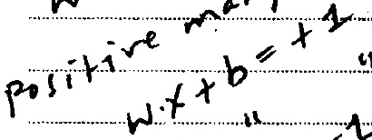
\[
\text{positive many}\\ w \cdot x + b = + 2
\]No match in the standalone-only reference set; this may contain other notation or text.
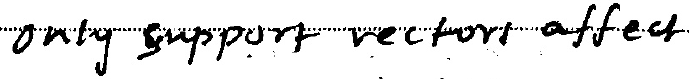
\[
\text{onlysupportvectorsaffected}
\]Overlaps provisional reference 5b-negative (IoU 0.635); does not guarantee a complete crop.
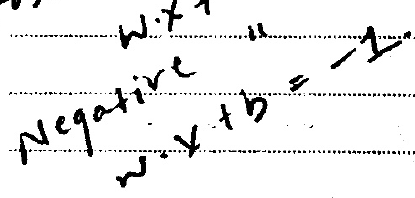
\[
\text{Negative} " w \cdot x + b = -1.
\]No match in the standalone-only reference set; this may contain other notation or text.
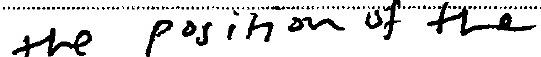
\[
\text{thepositionofthe}
\]No match in the standalone-only reference set; this may contain other notation or text.
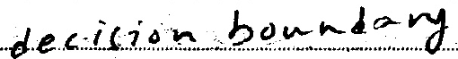
\[
\text{decisionboundary}
\]Overlaps provisional reference 5b-tanh (IoU 0.417); does not guarantee a complete crop.
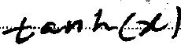
\[ tanh(x) \]
Overlaps provisional reference 5b-sigmoid (IoU 0.858); does not guarantee a complete crop.
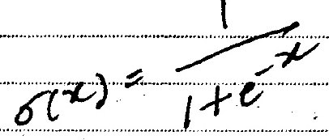
\[
\sigma (x) = \frac{1}{1 + e^{- x}}
\]